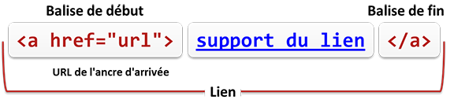
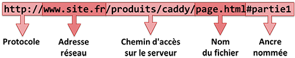
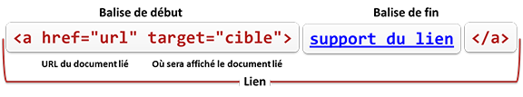

La balise a
permet de faire un lien hypertexte d'une ressource vers une autre
ressource (le plus généralement d'une page Web vers une autre page
Web).
Un lien a deux extrémités, appelées ancres (anchor - d'où le
nom de la balise).
L'ancre de départ contient :
une URL : la localisation physique de l'ancre d'arrivée
(la cible vers laquelle pointe le lien)
l'élément visuel marquant le lien (texte, images, etc)
L'ancre d'arrivée (la cible) est généralement une page Web
(ou un endroit à l'intérieur d'une page) mais peut être n'importe
quelle ressource Web (une image, une vidéo, un son, un programme,
une animation, etc).
L'ancre de départ d'un lien aura la
forme minimum suivante :

Ancre de départ
C'est la valeur de l'attribut href qui définit l'ancre
d'arrivée du lien. La valeur de cet attribut doit être une URL
valide (absolue ou relative, avec n'importe quel protocole supporté
par le navigateur).
Par défaut, un lien dans une page est repéré par un changement de
couleur et un soulignement du texte avec éventuellement le
changement de la forme du curseur de la souris quand le lien est
survolé.
Il y a 3 couleurs différentes pour signaler un lien. Ces couleurs
varient selon l'état du lien :
#0000EE pour un lien
qui n'a jamais été visité (vu),
#551A8B pour un lien
qui a déjà été visité (vu),
#EE0000 quand on
active un lien : le moment où la souris est enfoncée quand on
clique sur un lien,
Remarque : la mise en forme des liens peut être modifiée par des
règles de style CSS
appliquée à l'élément a suivant
son état (link, visited, active et hover)
Si du texte est majoritairement utilisé comme support des
liens, des images peuvent aussi remplir ce rôle.
Depuis HTML5, bien que a soit un
élément en ligne il peut aussi contenir des éléments de bloc.
Un nouvel attribut, download est prévu pour le liens
sur des ressources à télécharger. Avec cet attribut le navigateur
pourra faire la distinction entre une ressource vers laquelle
naviguer, et une ressource destinée à être téléchargée sur
l'ordinateur client. L'attribut download n'a pas besoin
forcément d'une valeur : elle est nécessaire uniquement si le nom
par défaut proposé à l'utilisateur pour le stockage est différent du
nom sur le serveur Web.
Ancre d'arrivée nommée
Un lien peut envoyer à un point précis situé dans la même page
ou dans une autre page. Ce point s'appelle une ancre d'arrivée
nommée.
Une ancre d'arrivée nommée permet au navigateur de se
positionner autre part qu'au début d'une page quand elle est chargée
et affichée. Elle permet aussi à l'utilisateur de se déplacer
rapidement à l'intérieur d'une page longue. Les liens en haut à
gauche de certaines pages de ce tutoriel sont des exemples de cette
technique.
Ancre de départ
L'ancre de départ doit avoir une URL dans laquelle le nom de la
ressources et le nom de la partie à atteindre sont séparés par le
caractère # (dièse).

URL avec une ancre nommée
Ancre d'arrivée
Une ancre d'arrivée nommée est réalisé en nommant n'importe quel
élément de la page HTML avec un attribut id et sa
valeur. Si on veut rester "sémantiquement correct", il convient
d'utiliser un élément a auquel
on ne donne pas d'attribut href.
L'élément servant d'ancre d'arrivée nommée n'a aucune
signalisation particulière parmi le reste du texte. L'ancre marque
tout simplement un endroit dans une page.
Fenêtre d'affichage
Avec l'attribut target on peut préciser dans un lien la
fenêtre (ou l'onglet) dans laquelle le document lié doit s'afficher.

cible d'affichage
Suivant la valeur donnée à l'attribut target,
l'affichage du document lié ne se fera pas au même endroit. Si le
nom donné comme valeur de l'attribut target est
le mot clé _blank : la ressource liée est
chargée et affichée dans une nouvelle fenêtre ou onglet.
le mot clé _parent : la ressource liée est
chargée et affichée dans la fenêtre conteneur du document en cours
si il y en a une, sinon à la place du document en cours.
le mot clé _top : la ressource liée est
chargée et affichée dans la fenêtre conteneur la plus haute de la
hiéarchie des conteneurs du document en cours si il y en a une,
sinon à la place du document en cours.
le mot clé _self : la ressource liée est
chargée et affichée dans la fenêtre du document en cours. c'est la
même chose que si'il n'y avait pas d'attribut target
et c'est le fonctionnement par défaut des liens.
Si le nom donné comme valeur de l'attribut target est
le nom d'un cadre (iframe)
: la ressource liée est chargée et affichée dans ce cadre.
le nom d'une fenêtre (ou onglet) déjà ouverte : la
ressource liée sera chargée et affichée dans cette fenêtre (ou
onglet).
Si le nom donné comme valeur de l'attribut target
n'est aucun de ceux évoqué précédemment, une nouvelle fenêtre (ou
onglet) du navigateur est ouverte et la ressource liée y est
chargée et affichée.
Complétez le code HTML ci-dessous pour réaliser les liens
demandés en utilisant des URLs relatives par rapport à la page ici.html.
Le support des liens est une image.
aragorn.png (dans anneaux)
boromir.png (dans anneaux)
elrond.png (dans elfes)
frodon.png (dans hobbits)
gandalf.png (dans html02)
gimli.png (dans images)
gollum.png (dans hobbits)
legolas.png (dans elfes)
Toutes les pages HTML se trouvent dans le dossier lord_rings.
Le nom de la page est le même que celui de l'image, sauf pour
l'extension qui est html et pas png.
arborescence de l'exercice
L'intégration des image se fait avec la balise img et
son attribut src. Pas la peine de donner les dimensions
des images.